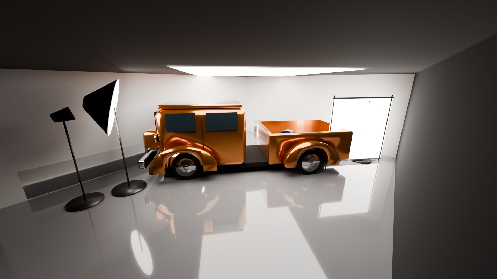
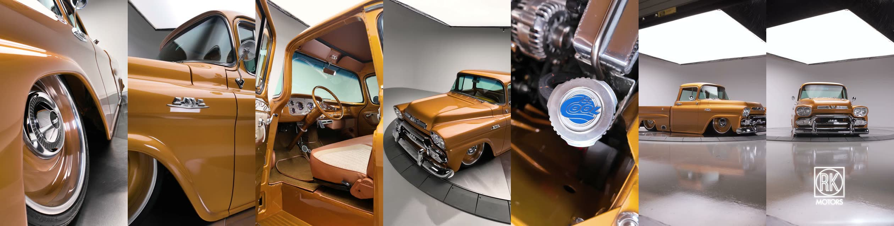
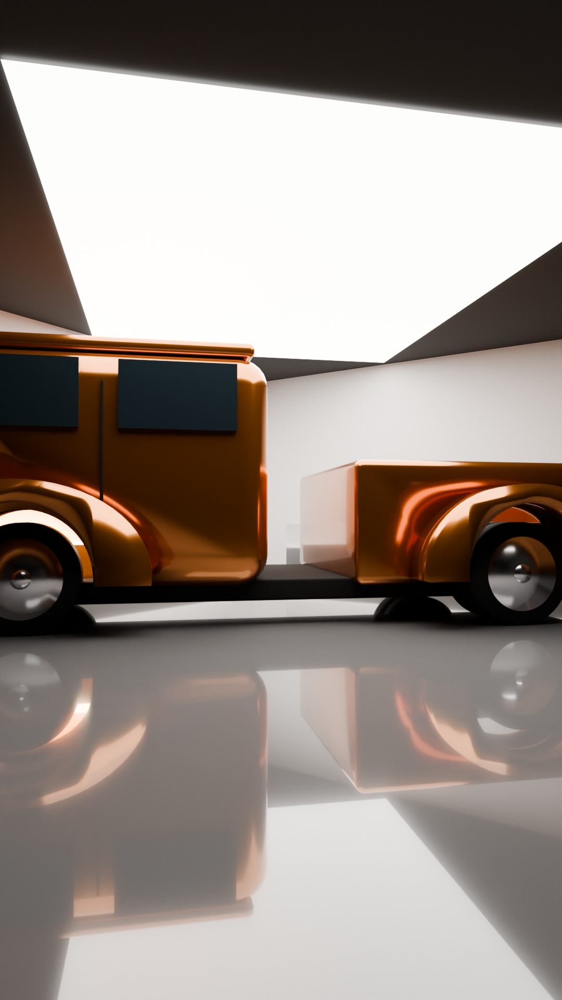
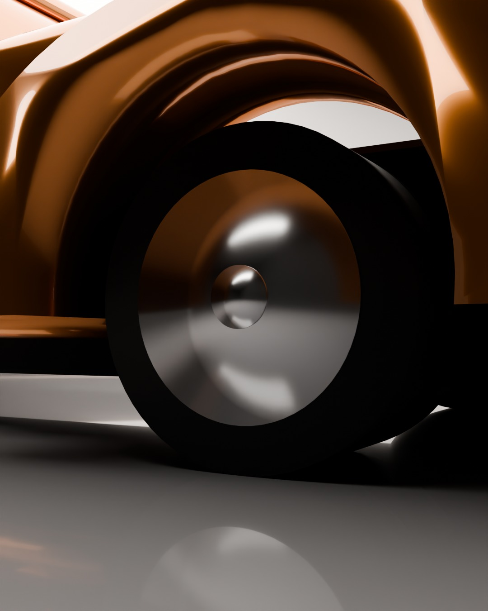
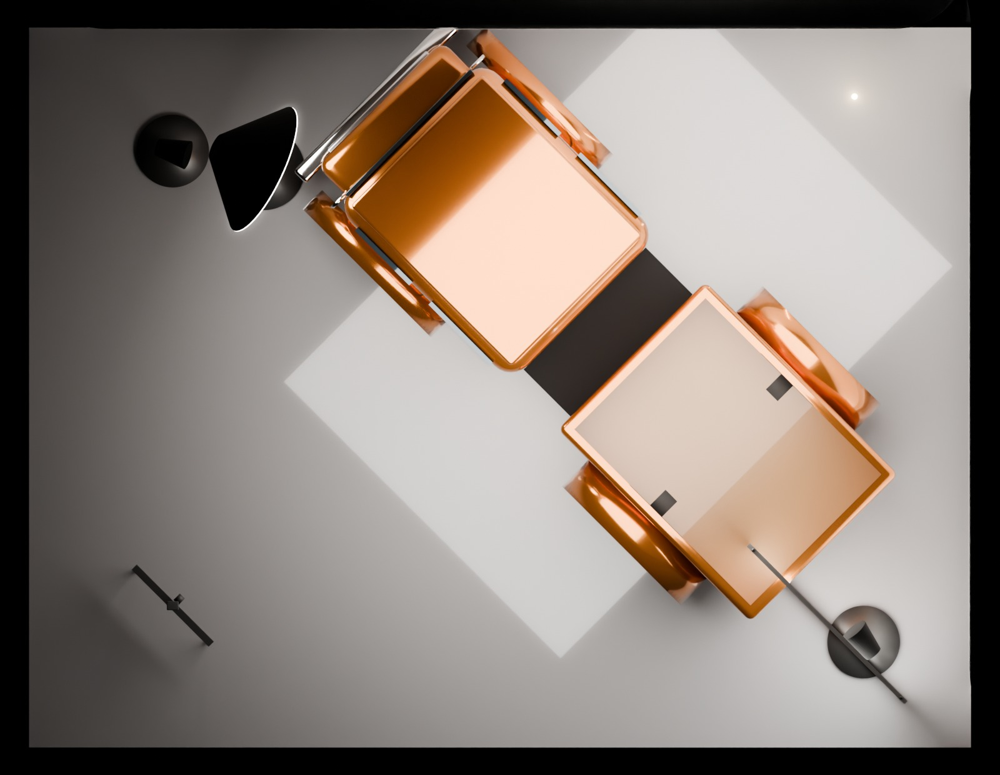

Convertir la bodega en un estudio de video para que cada camión que salga del taller se vea como en los reels de RK Motors: fondo blanco sin esquinas, piso espejo y una pintura que brilla.
Versión 2 · 22 sep 2026 · precios en USD verificados el 18 sep 2026 en fabricante, B&H y Adorama. Obra civil y electricidad son estimados hasta tener cotización.
Este es el reel de referencia de RK Motors: 34 segundos, vertical, 136 mil likes. Son 9 tomas cortas de un camión sobre fondo blanco. Parece simple, pero lo hacen cinco cosas que hay que construir.

El camión mide 23 ft de largo. Puesto en diagonal frente a un rincón blanco, la cámara queda en la esquina opuesta a 24 ft de distancia: suficiente para verlo completo. El techo de 11 ft cambia una sola cosa: en vez de colgar una caja de luz encima del camión, el techo mismo se convierte en la luz.
Sobre las cortinas laterales y la altura. Las cortinas o paredes blancas van del piso al techo, los 11 ft completos, y se recogen 1 ft en el piso para hacer la curva. No hace falta más altura para la luz: la luz viene del techo, no de arriba de las cortinas. Lo único que sí necesita techo alto es colgar una caja de luz, y por eso la cambiamos por el rebote.
Lo que no entra en este espacio: la tornamesa de 20 ft que usa RK. Se reemplaza con un movimiento lento de cámara en riel, que en pantalla se ve igual de bien.
Las tres usan la misma bodega y el mismo plano. Cambia qué tan permanente es la construcción, cuánta luz hay y con qué cámara se graba.
| Opción 1 · Básica | Opción 2 · Recomendada | Opción 3 · Pro | |
|---|---|---|---|
| Fondo | Cortinas blancas en las dos paredes del rincón. | Rincón blanco construido en drywall con curva, permanente. | Igual que la 2. |
| Piso | Epoxi gris espejo solo en la zona del camión (20 × 24 ft). | Epoxi gris espejo en toda la bodega. | Igual que la 2. |
| Luz | 1 lámpara profesional al techo + 1 luz de pintura con domo. | 2 lámparas al techo + luz de pintura + ventana 8 × 8 + luces de interior y tubos. | 2 lámparas del doble de potencia + todo lo de la 2 + luces para el fondo. |
| Cámara | Sony a7 IV + lente 24-70 + macro + estabilizador. | Sony FX3 (cámara de cine) + 24-70 + macro + estabilizador con foco automático + riel motorizado. | FX3 + lentes Sony GM + gran angular + monitor profesional. |
| Qué se ve | Los detalles quedan perfectos: rueda, motor, interior, pintura. En el plano general se nota que el fondo es tela. | El look RK Motors completo en el reel vertical, incluido el plano general. | Igual que la 2, más calidad para YouTube en 4K, fotos de subasta y poder cambiar el color del fondo. |
| Sirve para | Godzilla y reels de proceso. | Godzilla, todos los builds futuros y ofrecer el estudio a otros talleres. | Lo mismo, con nivel de producción de agencia. |
| Tiempo | 2 a 3 semanas. | 5 a 6 semanas. | 6 a 8 semanas. |
| Obra | 6,600 – 8,000 | 19,300 – 27,900 | 20,000 – 28,700 |
| Equipo | 11,600 | 22,400 | 36,800 |
| Inversión total | $18,000 – 20,000 | $42,000 – 50,000 | $57,000 – 65,000 |
Es la primera opción donde el plano general, la toma que más se comparte, se ve como RK. Y la obra queda hecha una sola vez: el fondo y el piso duran años.
Si hay que grabar Godzilla en menos de un mes o probar el concepto antes de construir. Todo el equipo de la 1 se reutiliza en la 2.
Si además del reel se quiere producir el documental de YouTube en 4K y las fotos de subasta con el mismo equipo, o si el estudio va a rentarse.
Estas imágenes no son ilustraciones: son un cálculo físico de cómo rebota la luz con el plano de arriba y las medidas exactas del cuarto.



Dos reels por semana desde el taller, grabados con celular: Henry en el metal, Víctor con el Cummins, Edwin con el interior. Cuentan la historia y crean la audiencia antes del reveal.
10 a 15 reels de 34 segundos estilo RK, uno por detalle del camión, publicados de noviembre a enero. Más el documental de 10 minutos para YouTube.
SEMA (3–6 nov) y Barrett-Jackson Scottsdale (23–31 ene). Los reels del estudio son el material que se manda a compradores y prensa antes de la subasta.
El estudio no es solo para Godzilla. Queda para cada camión que salga del taller, para las fotos de venta y para ofrecerlo como servicio a otros talleres y dealers de la zona. Es la única pieza de esta inversión que se paga sola.
Para quien quiera revisar marca por marca. Precios USD sin impuestos. Los rangos de obra son estimados.
| Ítem | Qué es | USD |
|---|---|---|
| Piso epoxi 480 sq ft | 100 % sólidos, gris medio, alto brillo, a $9–12/sq ft | 4,320–5,760 |
| Cortinas blancas | Muslin blanco piso a techo en dos paredes + rieles | 700 |
| Techo | Pintura: rectángulo blanco 20 × 14 ft, resto negro | 400 |
| Electricidad | 3 circuitos de 20 A dedicados | 750 |
| Oscurecer | Tapar tragaluces y puertas | 400 |
| Lámpara al techo | Aputure LS 600c Pro II (oferta) | 1,490 |
| Luz de pintura | Amaran 300c + Light Dome 150 | 724 |
| Grip | 2 floppies 4 × 4, tela negra 20 × 20, 4 C-stands, pluma | 1,879 |
| Cámara | Sony a7 IV + Sigma 24-70 II + Sony 90 macro + polarizador + ND | 4,815 |
| Movimiento | DJI RS 4 Pro + slider Zeapon + trípode Benro | 1,738 |
| Monitor y audio | Atomos Shinobi II + Zoom F3 + Sennheiser MKE 600 | 998 |
| Total | 18,214–19,654 |
| Ítem | Qué es | USD |
|---|---|---|
| Piso epoxi 884 sq ft | Toda la bodega, gris medio alto brillo, $9–12/sq ft | 7,956–10,608 |
| Rincón blanco | Drywall con curva de 3 ft en dos paredes (34 + 26 ft), contratista | 8,000–14,000 |
| Techo de luz | Tela blanca 20 × 14 ft tensada + pintura negra del resto | 1,000 |
| Electricidad | 4 a 6 circuitos de 20 A dedicados | 1,500 |
| Oscurecer | Tragaluces, puertas, telas | 800 |
| Lámparas al techo | Aputure LS 600c Pro II × 2 (oferta, de $2,490 c/u) | 2,980 |
| Luz de pintura | Amaran 300c + Light Dome 150 | 724 |
| Ventana 8 × 8 | Amaran 300c + marco Kupo + tela de difusión | 1,490 |
| Interior y detalles | Lantern 90 + Amaran F21c + kit MC de 4 minis | 1,237 |
| Tubos | Nanlite PavoTube II 30C kit 4 | 720 |
| Grip | Floppies Matthews × 2, tela negra 20 × 20, 4 C-stands, 2 combos, pluma | 3,029 |
| Cámara | Sony FX3A + Sigma 24-70 II + Sony 90 macro + polarizador + ND | 7,214 |
| Movimiento | DJI RS 4 Pro Combo + Focus Pro + Edelkrone SliderPLUS + Sachtler | 3,712 |
| Monitor y audio | Shinobi II + Zoom F3 + MKE 600 + Rode Wireless PRO | 1,297 |
| Total | 41,659–50,311 |
| Ítem | Qué cambia respecto a la 2 | USD |
|---|---|---|
| Obra | Igual que la 2 + un circuito de 240 V | 20,006–28,658 |
| Lámparas al techo | Aputure STORM 1200x × 2 (el doble de potencia) | 5,980 |
| Luz de pintura | LS 600c Pro II + Light Dome 150 | 1,759 |
| Ventana, interior, tubos, fondo | Amaran 300c, Lantern + F22c + MC Pro 8, PavoTube 30XR kit 4, Halo 200x × 2 | 5,649 |
| Grip | Stands Matthews, floppies Matthews, marcos, tela negra | 5,543 |
| Cámara | FX3A + Sony 24-70 GM II + 16-35 GM II + 90 macro + filtros | 10,943 |
| Movimiento, monitor, audio | RS 4 Pro Combo + Focus Pro + SliderPLUS + Sachtler + SmallHD Ultra 5 + audio | 6,909 |
| Total | 56,789–65,441 |
Fuentes de precios: aputure.com, amarancreators.com, nanliteus.com, msegrip.com, kupogrip.com, store.dji.com, edelkrone.com, smallhd.com, fjwestcott.com, canvasgrip.com y fichas de B&H, Adorama y Sweetwater con fecha 2026. Costos de piso y rincón blanco: Tampa Epoxy Floors 2026, Circular Studios, AST Cyc. Análisis del reel: instagram.com/reel/DXueW7-DQWY. Este documento acompaña al Libro Maestro Godzilla v1.0 del 22 de agosto de 2026.